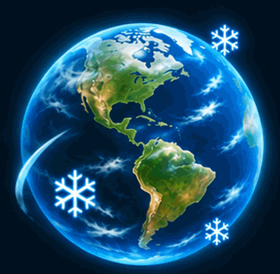
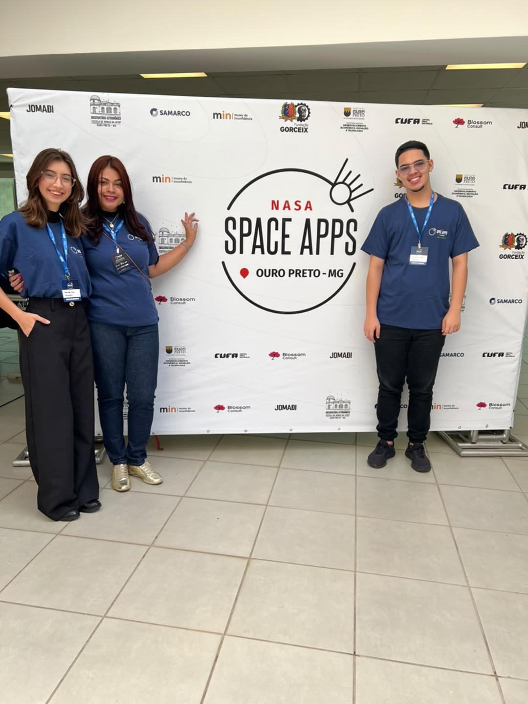

O PLANETA ESTÁ FALANDO.
Da órbita da NASA para a sua tela: desvendando as tendências do planeta.
NASA SPACE APPS CHALLENGE 2026 · VULCANODEV

DADOS NÃO SÃO RESPOSTAS.
Satélites geram informações ambientais valiosas.
Localizar, comparar e interpretar esses dados é complexo.
Temperatura do ar ≠ temperatura da superfície.
Uma curva crescente não comprova, sozinha, uma tendência significativa.
INVESTIGUE. COMPARE. COMPREENDA.
Selecione uma variável ambiental e uma região.
Explore séries históricas e visualize mudanças.
Examine taxas de variação, fontes e limitações.
NASA Giovanni e AppEEARS como bases científicas.
CIÊNCIA PARA TODOS.
Educação: estudantes e professores.
Pesquisa: investigação de tendências ambientais.
Sociedade: acesso à informação científica.
Oportunidade: aproximar os dados abertos da NASA das pessoas.
DA IDEIA À APLICAÇÃO.
Interface interativa com recursos de acessibilidade.
Visualização de dados ambientais ao longo do tempo.
Próximo passo: validar integrações e resultados científicos.
TECNOLOGIA COM PROPÓSITO.
Uma equipe que transforma tecnologia em conhecimento.
OURO PRETO — MG / 2026

O FUTURO COMEÇA COM UMA DESCOBERTA.
Transformar dados da NASA em conhecimento acessível.
Ampliar a investigação de tendências ambientais.
Aproximar estudantes, pesquisadores e sociedade da ciência.
CTRLClima — Explore os dados. Questione. Descubra.